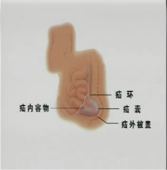
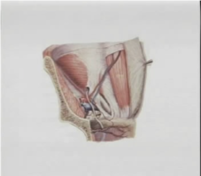
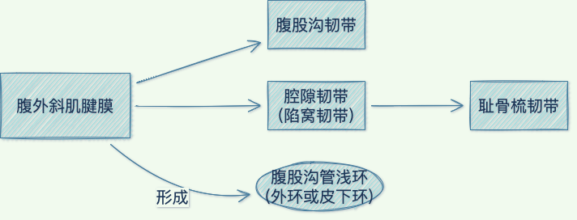
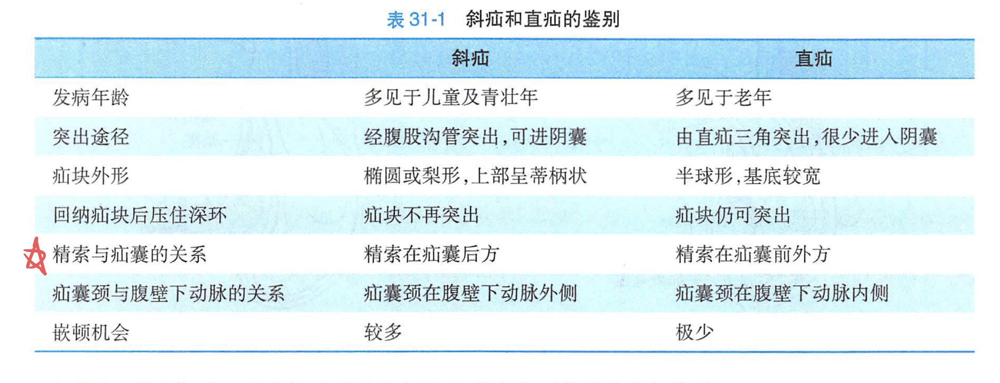

31.腹外疝
一、概述
疝(hernia)：体内脏器或组织离开其正常解剖部位，通过先天或后天形成的薄弱点、缺损或孔隙进入另一部位
腹外疝：由腹腔内的脏器或组织连同腹膜壁层，经腹壁薄弱点或孔隙，向体表突出
病因：(and)
- 1.
腹壁强度降低：
- 1.
某些组织穿过腹壁(精索、子宫圆韧带)
- 2.
腹白线发育不全
- 3.
手术切口愈合不良
- 4.
羟脯氨酸含量减少
- 1.
- 2.
腹内压升高：正常人虽时有腹内压增高情况，但腹壁强度正常， 不致发生疝
解剖：

典型的腹外疝组成：
①疝环 ；②疝囊 ；③疝内容物；④疝外被盖
各种疝通常以疝门部位作为命名依据
分类：
- 1.
易复性疝
- 2.
难复性疝：内容物不能回纳或不能完全回纳入腹腔内，但并不引起严重症状，内容物多是大网膜
-
滑动疝(多见于右侧)
-
- 3.
嵌顿性疝：疝囊颈较小而腹内压突然增高时，疝内容物可强行扩张囊颈而进入疝囊，随后因囊颈的弹性收缩，又将内容物卡住，使其不能回纳
- 4.
绞窄性疝：肠管嵌顿不及时解除，肠壁及其系膜受压情况不断加重可使动脉血流减少，最后导致完全阻断，肠系膜动脉搏动消失
- 1.
Richter疝：有时嵌顿的内容物仅为部分肠壁，系膜侧肠壁及其系膜并未进入疝囊 ，肠腔并未完全梗阻
- 2.
Littre疝：嵌顿的小肠是小肠憩室(通常是 Meckel憩室)
- 3.
Maydl疝：疝囊内各嵌顿肠袢之间的肠管可隐藏在腹腔内(逆行性疝)
- 4.
Amyand疝：疝内容物为阑尾
- 1.
嵌顿性疝和绞窄性疝很难截然区分，儿童腹外疝嵌顿后很少发生绞窄
二、腹股沟疝
解剖
腹股沟区
边界：

上界为髂前上棘至腹直肌外侧缘的一条水平线
内界为腹直肌外侧缘
下界为腹股沟韧带
层次：

深环：在腹股沟中点上方2cm、腹壁下动脉外侧处，男性精索和女性子宫圆韧带穿过腹横筋膜而造成一个卵圆形裂隙，即为腹股沟管深环 (内环或腹环)——腹横筋膜
直疝三角 ( Hesselbach 三角，海氏三角)
边界：
外侧边是腹壁下动脉
内侧边为腹直肌外侧缘
底边为腹股沟韧带
发病机制
- 1.
先天性解剖异常：鞘突不闭锁或闭锁不完全，右侧较多
- 2.
后天性腹壁薄弱或缺损：腹横肌和腹内斜肌发育不全
临床表现
- 1.
斜疝：基本表现是腹股沟区有一突出的肿块
- 1.
易复性斜疝：除腹股沟区有肿块和偶有胀痛外，并无其他症状
- 2.
难复性斜疝：胀痛稍重，疝块不能完全回纳，但疝内容物未发生器质性病理改变
- 3.
嵌顿性疝：强力劳动或排便等腹内压骤增是其主要原因，表现为疝块突然增大，并伴有明显疼痛
-
发生在肠袢有机械性肠梗阻表现
-
- 4.
绞窄性疝：肠袢坏死穿孔时，疼痛可因疝块压力骤降而暂时缓解，不可认为病情好转
- 1.
- 2.
直疝：
- 1.
常见于年老体弱者
- 2.
直立时，在腹股沟内侧端、耻骨结节上外方出现一半球形肿块，不伴疼痛
- 3.
平卧后疝块自行消失
- 1.

治疗
- 1.
嵌顿性和绞窄性疝的处理原则：
- 1.
手法复位指征：(除外均应立即手术)
- 1.
嵌顿时间在 3 ~4 小时以内，局部压痛不明显，无腹膜剌激征者
- 2.
年老体弱或伴有严重疾病而估计肠袢尚未绞窄坏死者
- 1.
- 2.
体位：头低足高卧位
- 1.
- 2.
非手术治疗：①一岁以下婴儿；②老年体弱者；③有严重疾病禁忌手术者
- 3.
手术治疗：最有效
- 1.
高位结扎：
- 1.
婴幼儿
- 2.
绞窄性斜疝因肠坏死而局部有严重感染
- 1.
- 2.
加强或修补腹股沟管管壁
- 1.
前壁：Ferguson法，在精索前方将腹内斜肌下缘和联合腱缝至腹股沟韧带上
- 2.
后壁：
- 1.
Bassini法：提起精索将腹内斜肌下缘和联合腱缝至腹股沟韧带上
- 2.
Halsted法：Bassini法+腹外斜肌腱膜
- 3.
McVay法：在精索后方把腹内斜肌下缘和联合腱缝至耻骨梳韧带上
- 4.
Shouldice法：将腹横筋膜自耻骨结节处向上切开，直至内环，然后将切开的两叶予以重叠缝合
- 1.
- 1.
- 3.
无张力疝修补术：利用人工高分子材料网片进行修补，对嵌顿疝行急诊手术不推荐使用材料(感染)
- 4.
经腹腔镜疝修补术(LIHR)：创伤小 、术后疼痛轻、恢复快、复发率低 、无局部牵扯感
- 1.
三、股疝
股疝(femoral hernia)：疝囊通过股环、经股管向卵圆窝突出的疝
解剖
股管上口称股环，下口为卵圆窝
临床表现
在腹股沟韧带下方卵圆窝处表现为一半球形的突起，平卧回纳不能完全消失(脂肪堆积)
鉴别诊断
- 1.
腹股沟斜疝：位于腹股沟韧带上内方，股疝则位于腹股沟韧带下外方
- 2.
脂肪瘤：脂肪瘤基底不固定而活动度较大，股疝基底固定而不能被推动
- 3.
大隐静脉曲张结节样膨大：压迫股静脉近心端可使结节样膨大增大;
治疗
股疝容易嵌顿，一旦嵌顿又可迅速发展为绞窄性疝，应及时手术治疗
手术方法：
四、切口疝
-
占腹疝第三位
-
最常发生的是经腹直肌切口（尤其下腹部）
-
多见于纵行切口
-
主要症状：腹壁切口处逐渐膨隆，有肿块出现
-
疝环一般比较宽大，很少发生嵌顿
-
治疗原则：手术修补
五、脐疝
-
疝囊颈一般不大，但极少发生嵌顿和绞窄
-
2岁之前采取非手术疗法；2岁后脐环直径大于 1.5cm则手术治疗；5 岁以上均应采取手术治疗
-
成人脐疝多数是中年经产妇女
-
手术修补原则：切除疝囊，缝合疝环
六、白线疝
-
病因：白线的腱纤维均为斜行交叉
-
治疗：只需切除突出的脂肪，缝合白线的缺损